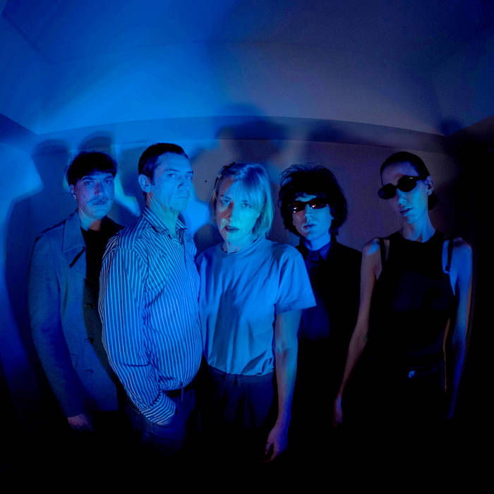

Desde su aparición en la escena porteña en 2013, OK Pirámides se ha consolidado como una de las propuestas más singulares del rock alternativo argentino. Su sonido combina guitarras reverberantes, climas introspectivos y una marcada influencia del post-punk, la psicodelia y el dream pop, sin caer en lugares comunes ni fórmulas gastadas. El proyecto liderado por Julián Della Paolera (ex Victoria Mil - La Nueva Flor) ha construido una obra que subvierte la lógica del pop como secuencia de estribillos predecibles, proponiendo en su lugar un viaje por paisajes mentales descentrados, abrasivos y profundamente sensoriales. Formada por Loló Gasparini (Isla de los Estados, Gustavo Cerati) e Ignacio Jeannot (Juanse, La Armada Cósmica), Manu Duca (Las Kellies), Carmelo Puy. Todo en Ok Pirámides parece operar como un conjuro sonoro: nada es exactamente lo que parece, y esa es la gracia. En escena, su propuesta se convierte en ritual. No hay poses rockeras ni virtuosismo exhibicionista: hay trance, hay densidad, hay humanidad. Tocan como si exorcizaran algo que no tiene nombre, y en el proceso arrastran al oyente a un umbral liminal entre el goce y el vértigo. En tiempos donde incluso lo alternativo se ha vuelto fórmula, ellos eligen el error, la interferencia, el desvío. Son una anomalía feliz, un glitch argentino en el mapa global del rock contemporáneo.
